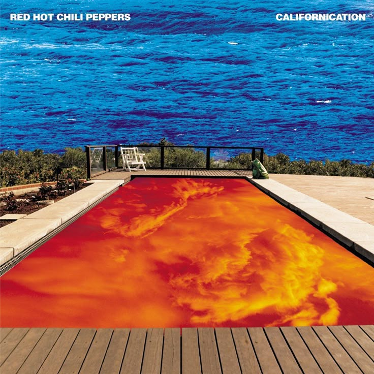
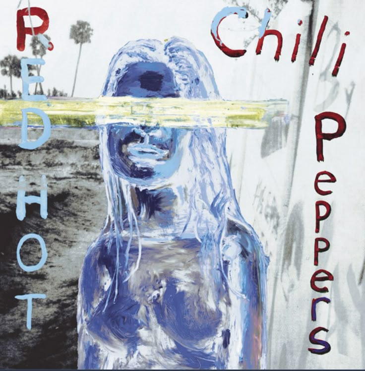
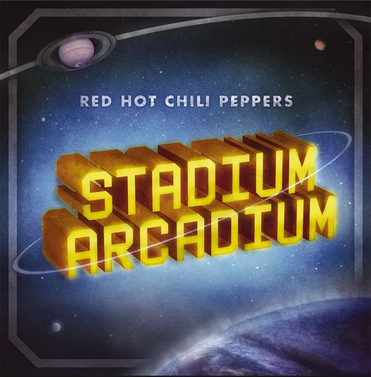
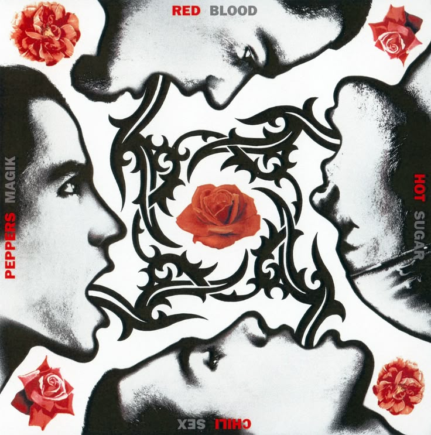
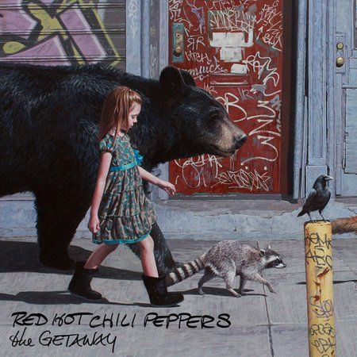

This was the album that pulled me deeper into RHCP. Californication feels nostalgic, dreamy, emotional, and strangely comforting at the same time.
Songs like Otherside, Scar Tissue, and Parallel Universe feel cinematic — especially during late night walks or summer evenings.

This album feels softer and more emotional. It has a very specific atmosphere that feels almost nostalgic even when hearing it for the first time.
I love how melodic and warm it sounds. Venice Queen and Dosed especially feel unforgettable.

Stadium Arcadium feels huge. The album somehow has everything: emotional songs, chaotic energy, beautiful guitar work, and pure RHCP weirdness.
It feels like a soundtrack for an entire era.

This album feels raw, funky, messy, energetic, and completely alive.
You can hear the chaos and chemistry of the band in every song. It feels less polished and more real.

The Getaway feels calmer, moodier, and more atmospheric than most RHCP albums. It has this late-night feeling that makes it very different from their older chaotic funk sound.
Songs like Dark Necessities and Goodbye Angels feel emotional and cinematic, while still keeping that unmistakable RHCP energy underneath.
I also like how experimental this album feels. It sounds less aggressive and more reflective, almost dreamy at times.